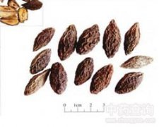

青果

拼音
Qīnɡ Guǒ
别名
橄榄、黄榄、白榄
来源
本品为橄榄科植物橄榄Canarium album Raeusch。的干燥成熟果实。秋季果实成熟时采收，干燥。
生境分布
生于低海拔的杂木林中；多为栽培。主产福建、四川、广东、云南、广西。
药材特点
常绿乔木，高10～20m。羽状复叶互生；小叶9～15，对生，革质，长圆状披针形，长6～19cm，宽3～8cm，先端尾状渐尖，下面网脉上有小窝点。圆锥花序顶生或腋生；花小，两性或杂性；萼杯状，3浅裂；花瓣3～5，白色，芳香；雄蕊6，子房上位，3室，每室胚珠2。核果卵形，长约3cm,青黄色。花期4～5月，果期8～10月。
性状
本品呈纺锤形，两端钝尖，长2.5～4cm，直径1～1.5cm。表面棕黄色或黑褐色，有不规则皱纹。果肉灰棕色或棕褐色，质硬。果核梭形，暗红棕色，具纵棱；内分3室，各有种子1粒。无臭，果肉味涩，久嚼微甜。
性味
甘、酸，平。
功能主治
清热，利咽，生津，解毒。用于咽喉肿痛，咳嗽，烦渴，鱼蟹中毒。
用法用量
4.5～9g。
化学成分
含甲酚、麝香草酚（thymol）、维生素C、柠檬烯、对-聚伞花素（P-cymere）、莰烯、橙花醇（nerol）、龙牛儿醇（geraniol）、S-杜松烯（S-cadinene）、B-石竹烯（B-caryophyllene）、a-？？烯（a-copaene）、橄榄醇（elemol）。
药理作用
1：无药理作用数据
摘录
《中国药典》